사진을 불러오지 못했습니다.
그 순간을 사진에 담고, 색감과 톤을 다듬습니다.
그림 한 장에도 그렇게 담습니다.
좋아 보였던 것을, 그대로 전합니다.
촬영과 편집, 그리고 디자인 —
하나의 흐름으로 이어집니다.
현장에서 사진을 직접 촬영하고, 색감과 톤을 다듬어 편집하는 일을 해왔습니다.
그 순간이 사라지기 전에, 담아두고 싶어서입니다.
포스터·썸네일 디자인도 사진과 함께 꾸준히 만들어왔습니다.
제 생각을 표현하기에, 한 장의 이미지만 한 도구가 없어서입니다.
팀의 예배와 행사를 기획하고, 그 공간을 꾸미는 일도 함께 맡아왔습니다.
어떤 장면을 남기고 싶은지는, 기획 단계에서부터 정해진다고 생각해서입니다.
사진과 포스터 디자인 —
카테고리를 눌러 필터링해보세요.
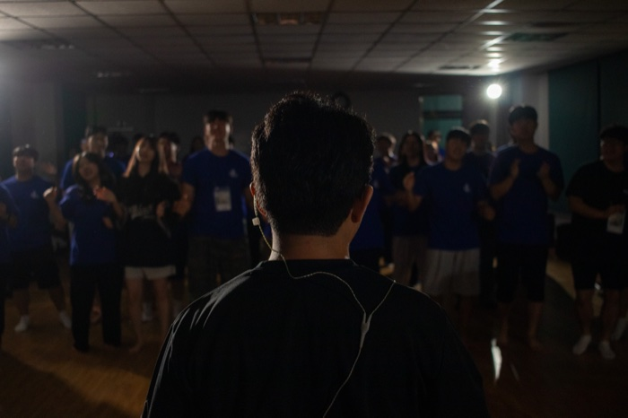
'Deep Dive' 수련회 무대의 밴드 연주와, 손을 들어 찬양하는 청년들의 순간을 어두운 톤 그대로 담았습니다.
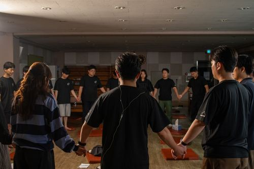
찬양팀 연주와 기도, 회중의 순간들을 브라운·레드 톤으로 편집했습니다.
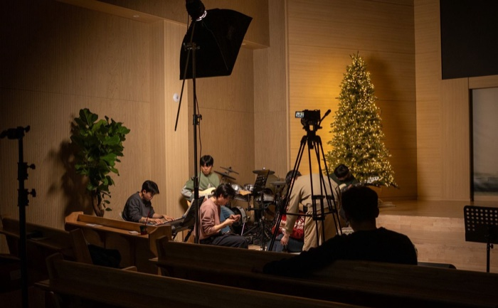
성탄절 기념 촬영을 위해 공간을 조성하고, 그 현장을 브라운·레드 톤으로 편집했습니다.
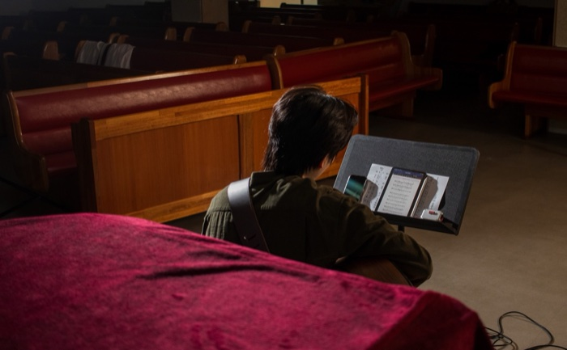
붉은 벨벳과 나무 예배당이 만드는 공간감을 살려, 팀의 주된 색에 맞춰 보정한 스냅입니다.
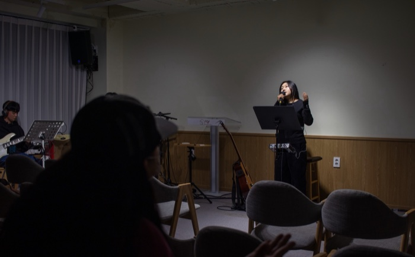
어두운 실내조명과 공간의 질감을 살려, 건물과 어울리는 톤으로 팀의 순간을 보정했습니다.
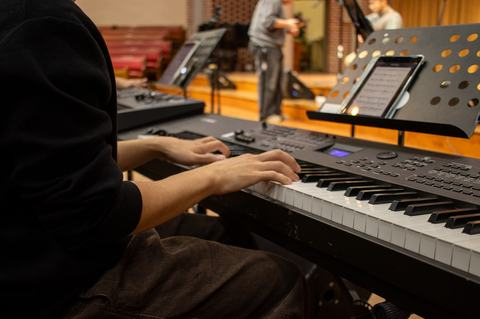
찬양팀 연주, 텅 빈 예배당의 여백, 손을 들고 찬양하는 회중의 순간을 레드·브라운·오렌지 톤으로 편집했습니다.
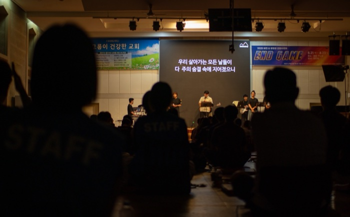
수련회 건물 내부의 무대와 조명, 현장의 공기를 담았습니다.
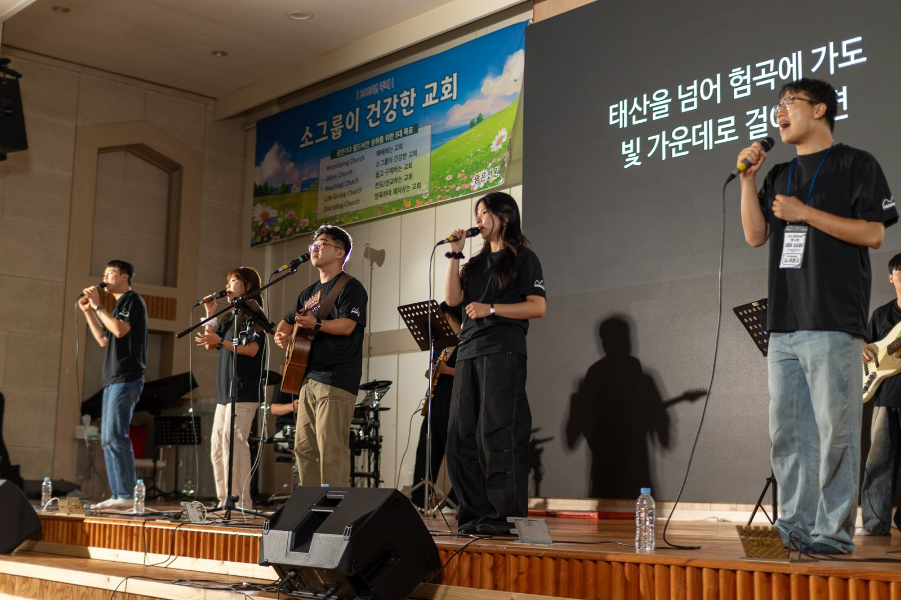
찬양팀의 연주와 회중의 기도, 텅 빈 예배당의 여백을 레드·브라운 톤으로 편집했습니다.
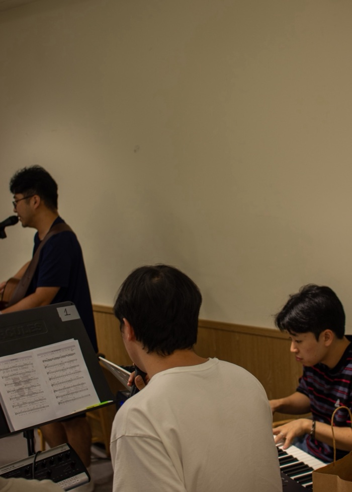
무대 뒤편에서 이뤄진 악기 리허설과 장비 세팅 과정을, 기타·베이스·드럼의 질감과 빈 벽면의 여백을 교차해 편집했습니다.
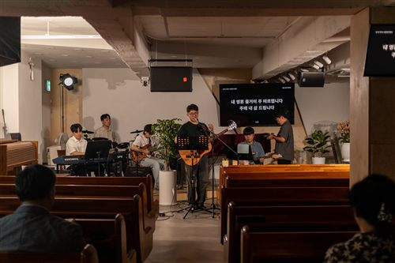
무대 전경과 예배당 내부를 함께 담아, 팀 색에 맞는 톤으로 보정했습니다.
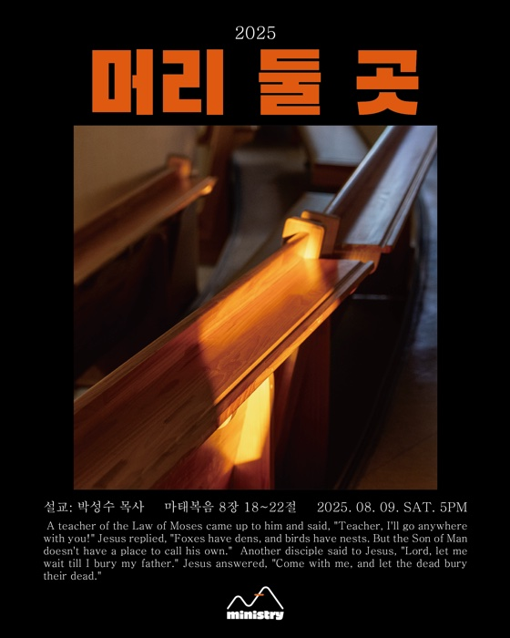
그림자와 조명이 만드는 공기를 살려, 같은 방식으로 포스터에 담았습니다.
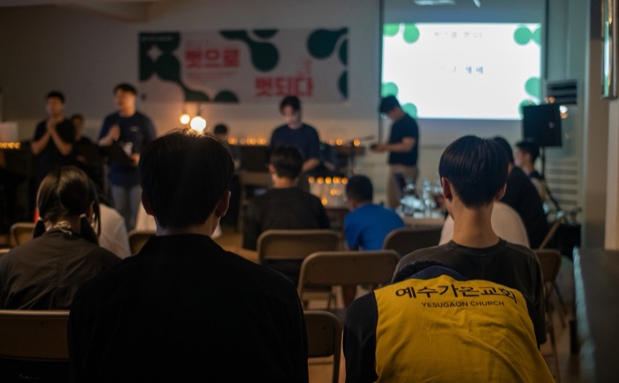
스크린 앞에 모여 찬양하고 기도하는 학생들의 모습과, 어두운 실내에서 홀로 조용히 기도하는 순간을 교차해 편집했습니다.
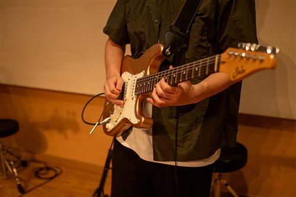
골드톤 기타의 질감과 벽에 드리운 그림자를 브라운·오렌지 톤으로 보정해, 팀의 색을 완성했습니다.
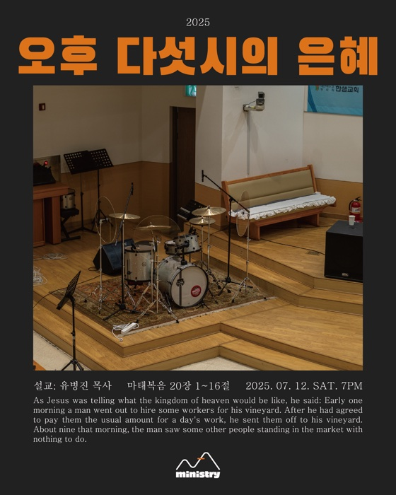
제가 찍은 예배당 사진 위에 제목과 말씀을 얹어, 잡지처럼 읽히는 포스터로 담았습니다.
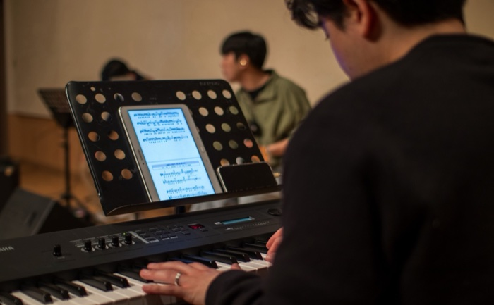
연주자의 손끝과 무대 바닥에 비친 밴드의 실루엣을 통해, 팀에 맞는 색감을 찾아가는 과정을 담았습니다.
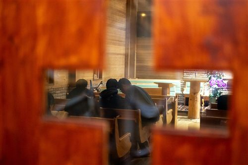
통나무 벽과 따뜻한 조명이 어우러진 예배당에서, 서로 어깨를 맞대고 기도하는 학생들과 찬양 밴드의 순간을 브라운 톤으로 보정했습니다.
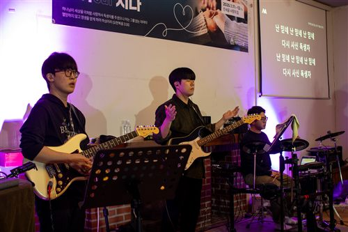
보랏빛 조명이 낯설었던 그날의 현장을 색보정 없이 그대로 남긴 스냅입니다. 찬양팀의 연주와 무대 뒤 순간들을 자연스러운 톤 그대로 담았습니다.
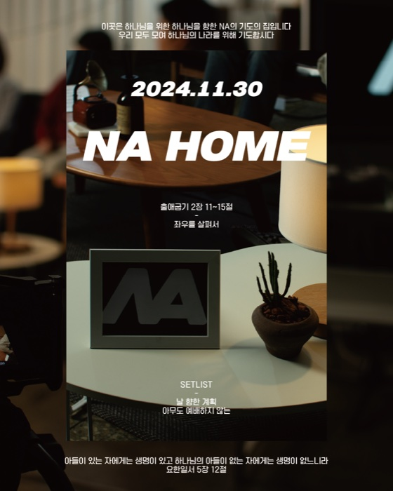
제가 찍은 사진을 소재로 홍보 포스터와 모임 스냅을 편안하고 아늑한 분위기로 디자인했습니다.
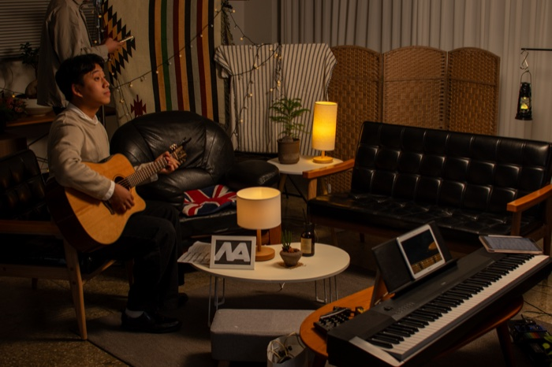
따뜻한 조명과 소품으로 채운 공간, 그 안에서 연주하고 촬영하는 순간들을 담았습니다.
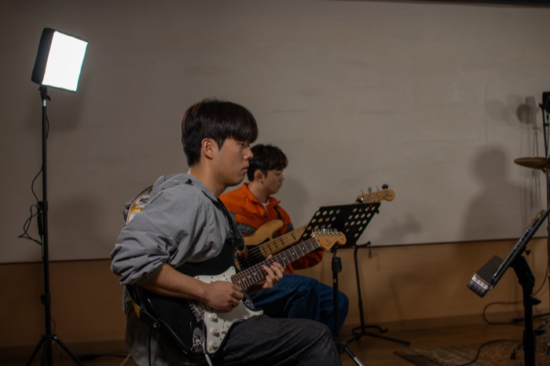
스튜디오 조명 아래 연주에 몰입한 얼굴과 텅 빈 드럼 세트를 교차해, 차분한 톤으로 편집했습니다.
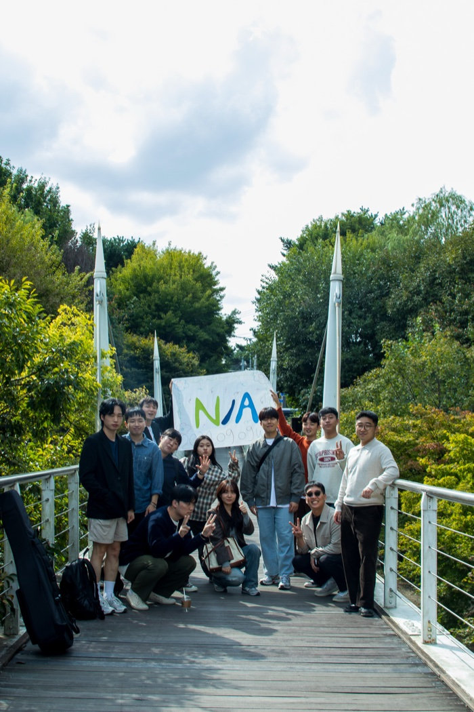
팀 워크숍으로 찾은 서울숲에서, 자연광과 초록빛 배경 아래 편안하게 웃는 팀원들의 순간을 담았습니다.
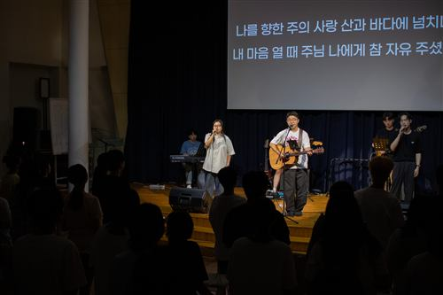
무대의 밴드와 회중, 그 사이를 오가는 순간들을 차분한 네이비·블루 톤으로 편집했습니다.
직접 디자인한 NA 로고 하나로, 여름과 겨울 두 가지 컨셉의 로고 플레이를 만들었습니다.
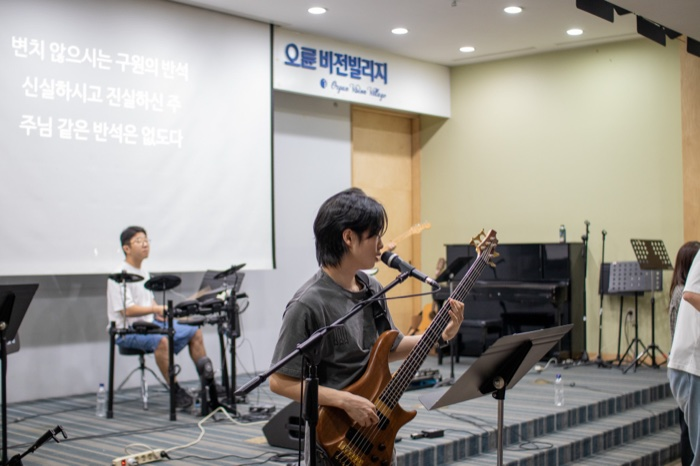
무대 위 밴드의 열기와 서로를 부둥켜안는 청년들의 순간을, 여름 수련회의 공기 그대로 담았습니다.
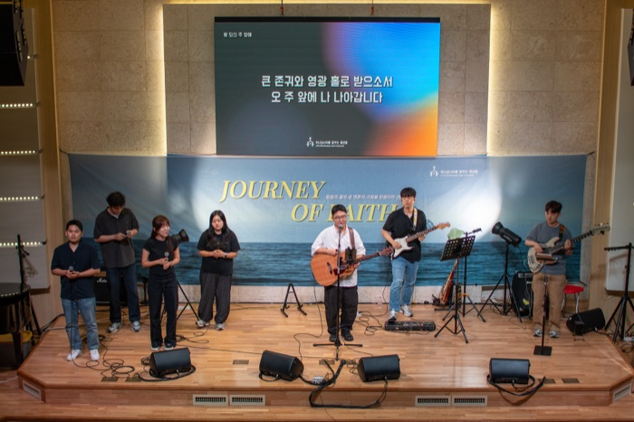
파도가 넘실대는 무대 배경 아래 찬양하는 밴드와, 손 모아 기도하는 청년들의 순간을 담았습니다.
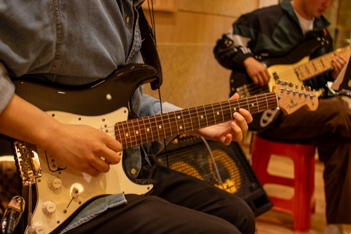
기타·건반·드럼을 오가는 손끝의 움직임을, 연습실의 따뜻한 우드톤에 맞춰 편집했습니다.
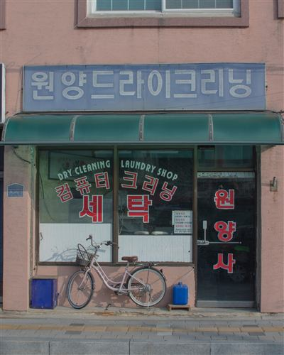
제가 사는 동두천의 오래된 상점들을 기록하고, 제 마음대로 색을 입혀본 개인 취미 작업입니다.
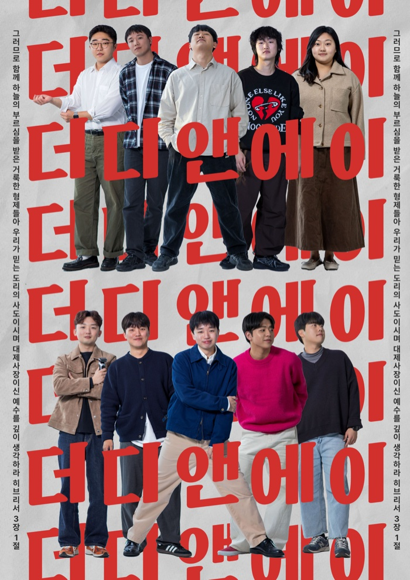
촬영한 프로필 사진과 타이포그래피를 엮어, 팀을 소개하는 매거진 레이아웃으로 디자인했습니다.
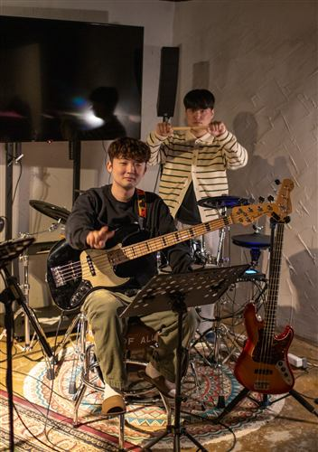
결성 초기, 합주실에서 연습하던 순간을 꾸밈없이 담은 날것의 기록입니다.
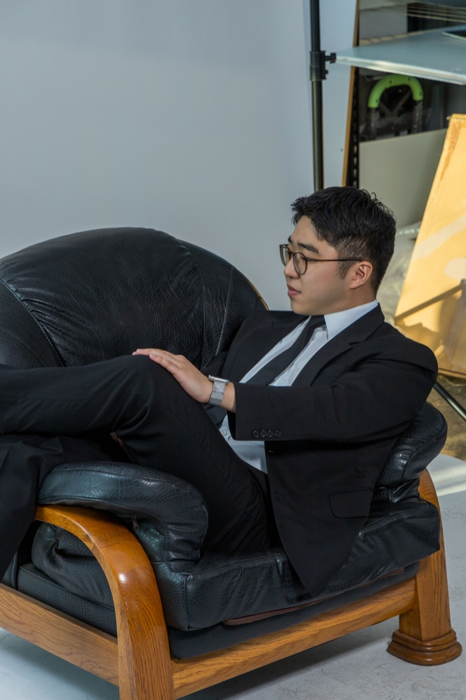
잡지 프로필을 위해 스튜디오에서 담은 인물컷을, 각자의 표정과 개성이 드러나도록 편집했습니다.
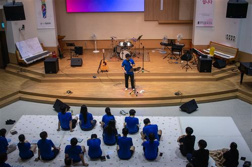
단체 티를 맞춰 입은 학생들과 무대의 컬러풀한 조명을 따뜻한 톤으로 담았습니다.
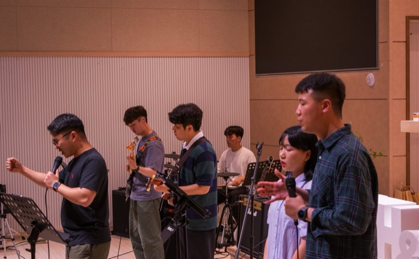
따뜻한 우드톤 예배당에서 밴드와 회중이 함께 찬양하는 순간을 담았습니다.
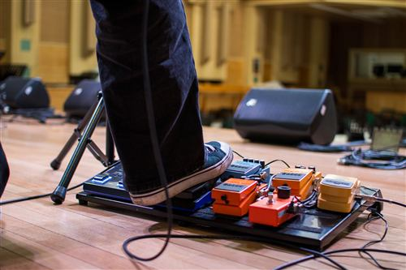
무대의 네이비·핑크 조명과 손을 들어 찬양하는 회중의 순간을 편집했습니다.
회사에서 맡았던 일 —
사진 밖의 기록입니다.
카페 거점 공간의 17일간 리모델링을 주도했고, 지역의 공간을 임차해 새로 꾸민 작업을 포함해 포토존·공간 조성 10여 곳을 맡았습니다.
로컬 팝업 전시와 축제 15회 이상의 기획과 현장 운영을 맡아 주요 행사 누적 방문객 5,000여 명을 맞았고, 그중 외부 팝업 1곳은 기획부터 운영까지 단독으로 주도했습니다.
포스터·영상·디지털 사이니지 등 브랜드 시각물 100여 종을 외주 없이 직접 제작해 제작 비용과 기간을 줄이고, 매장 비주얼 아이덴티티를 통일했습니다.
지역 주민·시니어 대상 원예 교육 30여 회차(누적 500여 명) 운영을 보조했고, 설문 통계와 결과 보고서를 정리해 성과공유회 개최와 후속 사업의 기반을 마련했습니다.
※ AI 도구는 회사 업무의 기획·홍보물 제작에 활용한 것으로, 이 사이트에 게시된 사진과 디자인 작업물은 전부 직접 촬영·제작한 결과물입니다.
팀에서 촬영 이야기가 나오면 리더와 논의해 준비합니다. 연습하는 모습과 행사 당일을 함께 촬영하고, 마음에 드는 사진만 골라 편집합니다.
행사가 끝나면 바로, 늦어도 다음 날까지는 편집해서 전달합니다.
따로 정해둔 장수는 없습니다. 단체 사진과 현장 사진을 기본으로, 그날 찍은 사진 중 마음에 드는 것만 골라 전달해왔습니다.
지금까지는 소속된 팀을 위한 작업으로 진행해, 별도 비용 없이 진행했습니다.
사진을 불러오지 못했습니다.